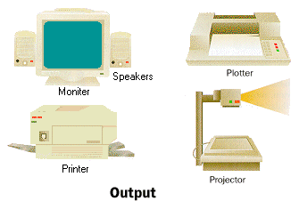

หน่วยแสดงผล
คือ มีอุปกรณ์ส่งออก (output device) ทำหน้าที่แสดงผลจากการประมวลผล โดยนำผลที่ได้ออกจาก หน่วยความจำหลักแสดงให้ผู้ใช้ได้เห็นทางอุปกรณ์ส่งออก อุปกรณ์ส่งออกที่นิยมใช้ส่วนใหญ่คือ จอภาพ และเครื่องพิมพ์
